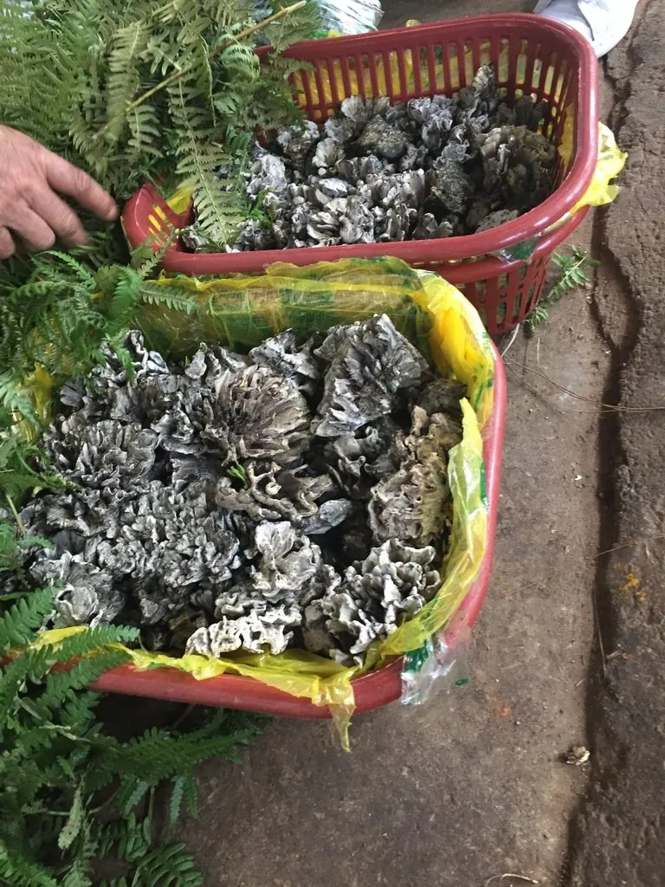

真菌 · 真菌界
干巴菌 Thelephora ganbajun

革菌科珍稀食用菌，子实体呈不规则丛枝状、灰黑带白边，香气浓烈似牛肉干，是云南夏季的名贵山珍。
- 分类
- 门担子菌门纲伞菌纲目革菌目科革菌科属革菌属
- 栖息环境
- 云南松与栎类混交林中地上，与松科树木形成外生菌根
- 地理分布
- 中国云南特有，滇中、滇西海拔 1000–2200 米林区为主产区
- 保护级别
- 暂无评估；因过度采挖与松林减少，产量逐年下降，需保护菌塘
物种志
干巴菌的子实体由基部多次分枝形成不规则丛枝状或珊瑚状，高 5–15 厘米，肉质坚韧，表面灰黑至黑褐色，边缘与幼嫩部分呈灰白色，干燥时呈革质。子实层生于分枝表面，平滑至略有皱褶，不形成菌褶或菌管。孢子印淡黄褐色，孢子具小疣。
干巴菌是中国云南特有的外生菌根菌，与云南松等松科树木共生，生于海拔 1000–2200 米的松栎混交林中，发生期 6–9 月雨季，喜温暖湿润。它香气浓郁、口感似牛肉干，与青辣椒同炒是滇菜经典，因无法人工栽培而价格昂贵。采挖时需保留菌塘、避免破坏菌丝体，否则来年不再出菇。其子实体夹带松针泥土较多，需反复撕拣清洗。
形态与习性
- 子实体丛枝状或珊瑚状，高 5–15 厘米，灰黑色
- 菌肉坚韧似革，撕开有浓郁牛肉干香气
- 孢子印淡黄褐色，孢子具小疣
- 生境云南松栎混交林地上，6–9 月雨季发生
- 食用性云南名贵山珍，与青椒同炒最经典
- 保护无法人工栽培，采挖须保护菌塘
趣味知识
- 干巴菌是云南特有菌，至今无法人工栽培，只能在山林中寻找。
- 它的香气被形容为“牛肉干加松脂”，撕成细丝与青辣椒爆炒是滇菜名吃。
- 干巴菌与云南松形成外生菌根，松林被砍伐后菌塘随之消失。
- 采菌人讲究“留塘”，采大留小、回填泥土，否则第二年就长不出菌了。